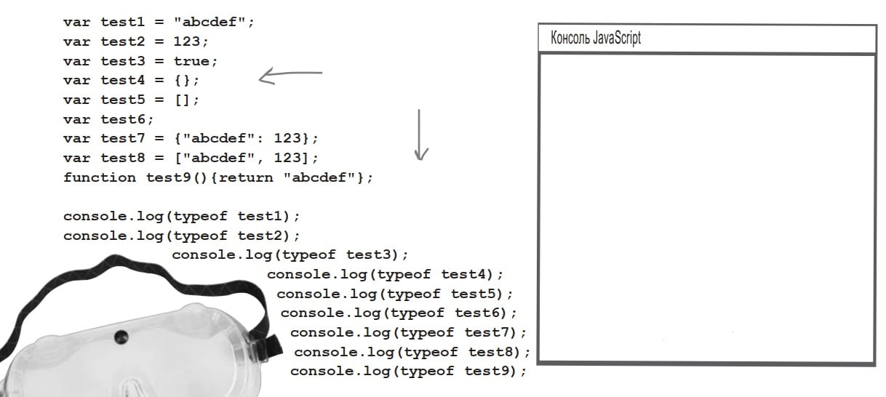
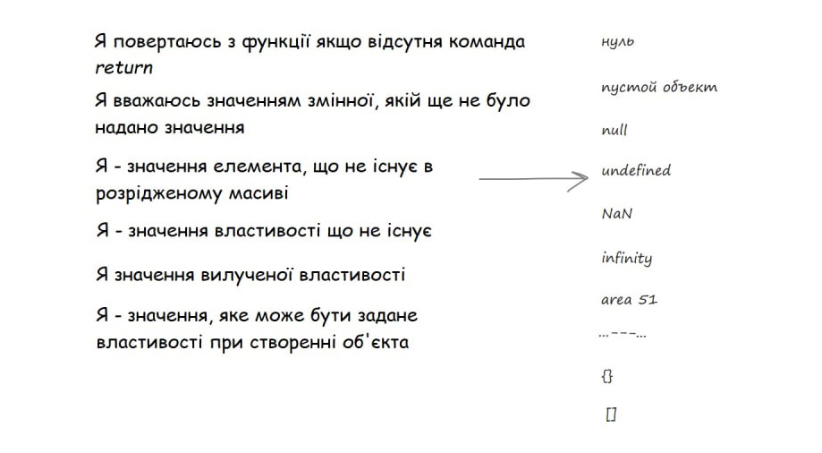

Головна > Тема 13
Значення undefined
Перевірте, що виведе консоль:
Кожного разу коли ви використовуєте змінну, яка ще не була оголошена, намагаєтесь отримати значення властивості, що не існує (або вилучена), звертаєтесь до елемента масиву, що не існує – ви стикаєтесь з undefined.
Приклади:
var x;
if (x == undefined) {
// змінна х не задана! Прийняти міри!
}
var customer = {
name: "Jenny"
};
if (customer.phoneNumber == undefined) {
// отримати телефон клієнта
}Значення undefined відноситься до типу undefined.
Оператор typeof
var subject = "Just a string";
var probe = typeof subject;
console.log(probe);Установіть відповідність:
Розробники JS з самого початку прийняли рішення: змінні, які ще не були ініціалізовані, матимуть одне значення, а інше значення будуть використовувати для позначення відсутності об’єкта. Отже, null частіше використовується там, де об’єкт ще не створений, або не знайдений, а undefined – для неініціалізованих змінних, відсутніх властивостей об’єктів, або значень в масивах.
Змінній також можна присвоїти null:
var test = null; // це означає , що в майбутньому ми присвоїмо об’єкт цій змінній, але поки що не присвоїлиВикористання null
Часто потрібно переконатися в тому, що функція чи метод повертає повноцінний об’єкт, а не null – на випадок, якщо функція не змогла знайти чи створити його:
var header = document.getElementById("header");
if (header == null) {
// заголовку немає!
}Значення NaN
Існують числові значення, які неможливо представити в JS. Для них використовують спеціальне значення: NaN("Not a Number"). Наприклад, 0/0.
var a = 0/0;
var b = "food"*1000;
var c = Math.sqrt(-9);
NaN != NaN
Робота з NaN
Перевірка числа на NaN (помилкова):if (myNam == NaN) {
myNam = 0;
}Не працює тощу що значення NaN не дорівнює нічому, навіть самому собі.
Замість цього використовують функцію isNaN:
if (isNaN(myNum)) {
myNam = 0;
}Спробуйте перевірити тип NaN.
var test = 0/0;
console.log(typeof test);Вірніше розуміти NaN як «число, що не маєпредставлення» замість «не число».
var a = 10/0; // a матиме тип Infinity